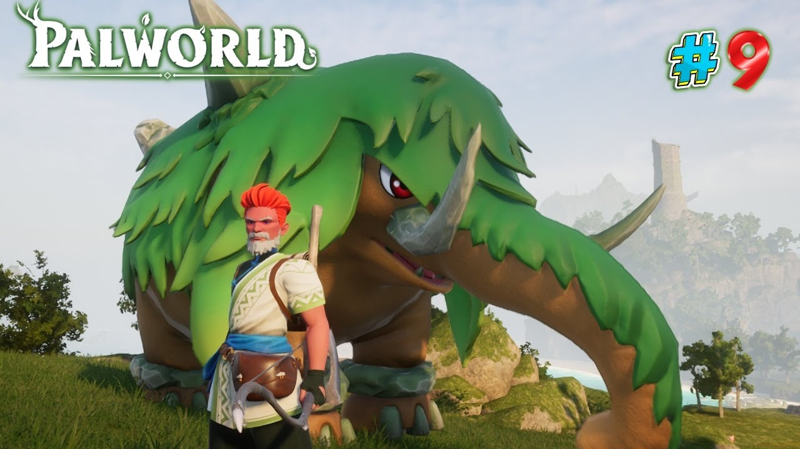

Blog de notícias: Fofocando com a Galera
CHOCANTE: Pal gigante é achado pelo jogador Reborn, ele disse: Quando eu vi esse pal eu fiquei chocado, é um pal gigantesco e feroz
O jogo palworld sucesso absoluto em números de vendas e batendo recordes de jogadores simultâneos tanto na steam quanto na xbox, vem despertando aquele espírito de quinta-série da nossa amada população brasileira. Sua proposta como jogo de sobrevivência com varios bixinhos chamados de "pals", isso mesmo(risos), "pals" os jogadores devem caçar pals para adquirir itens e alguns pals podem ser comidos, fator esse importantissimo para sua sobrevivência e a sobrevivência dos seus pals, os pals devem estar bem cuidados e bem alimentados, para que você possar fazer os pals trabalharem para você: desde produção de itens, plantação, mineração etc. Em resumo é um ótimo jogo para fãs de games desse genêro e não podemos esquecer das pessoas que gostam de animais fofinhos, por exemplo, pokémom. Com toda certeza você achará seu pal perfeito, desde um pal fofo a um pal gigante(risos)
